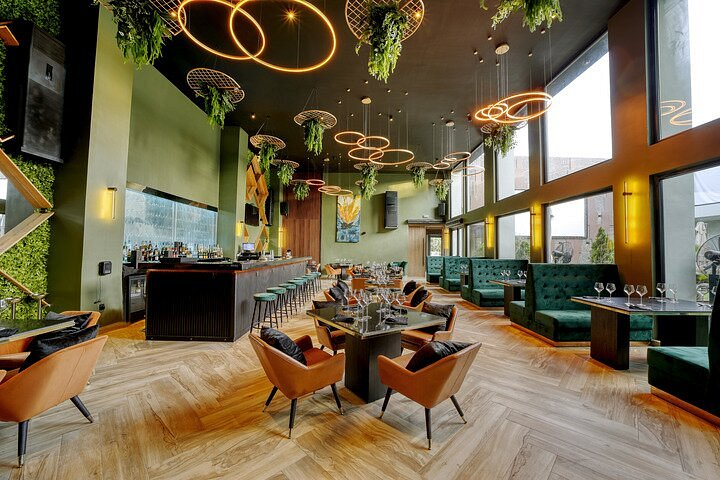
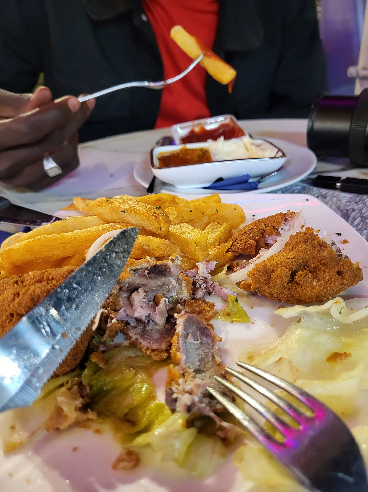
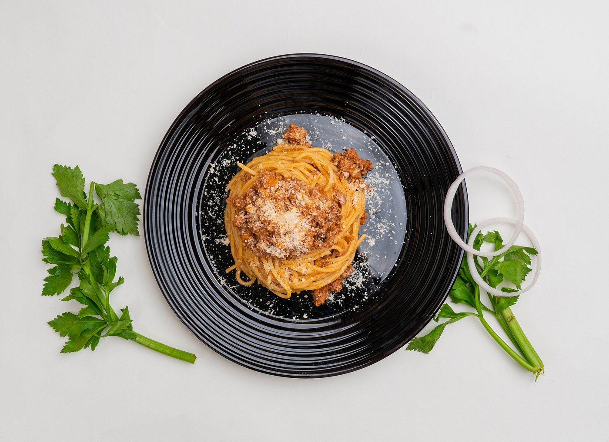

Cameroon offers a wide variety of delicious foods influenced by its many cultures. Some popular dishes include:
The Yard Restaurant is a popular restaurant in Douala, Cameroon, known for its modern ambiance and diverse menu. It offers a range of local and international dishes, making it a favorite spot for both locals and tourists. The restaurant's stylish decor and attentive service create a pleasant dining experience.
Le Carino Bistrot is a charming bistro located in Douala, Cameroon. It is known for its cozy atmosphere and delicious menu that features a mix of Cameroonian and French cuisine. The bistro is a great place to enjoy a meal with friends or family, offering both indoor and outdoor seating options.
This restaurant is renowned for its eclectic menu that beautifully merges the robust flavors of African cuisine with the finesse of European dishes. Visitors are treated to an array of delectable options, from traditional Cameroonian specialties to continental delights, ensuring there's something for every palate. The ambiance is warm and welcoming, making it an ideal spot for both casual dining and special occasions.
